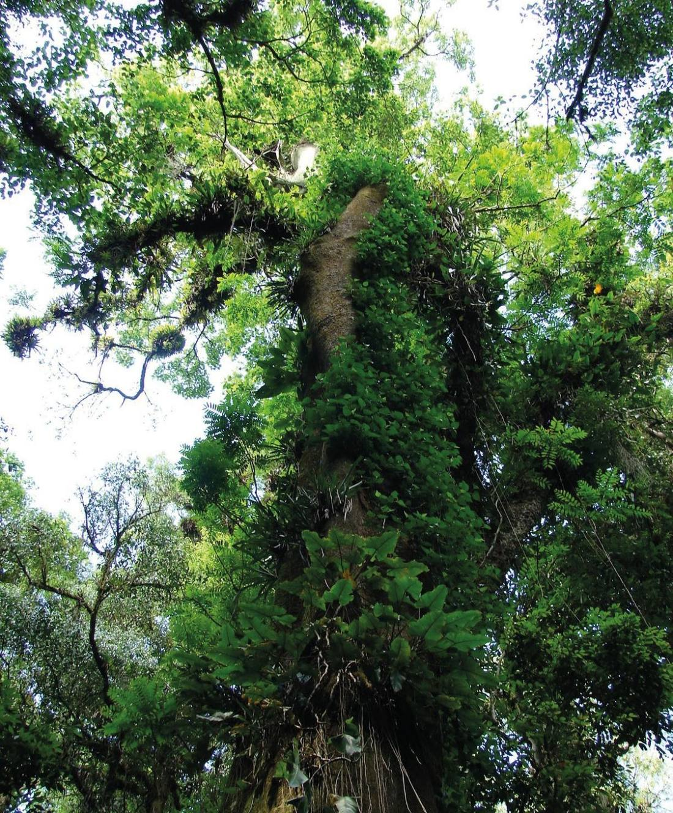
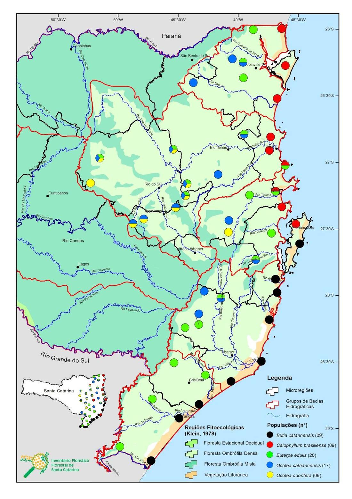

Em conformidade com a metodologia do Inventário Florestal Nacional do Brasil (IFN/BR), o FlorestaSC utilizou o processo de amostragem em múltiplas ocasiões com possibilidade de repetição total da amostragem, com distribuição sistemática de Unidades Amostrais (UAs) a partir de uma grade de pontos cobrindo todo o estado.
A seleção das UAs foi realizada a partir de uma estratificação preliminar em "floresta" e "não floresta", com base em imagens orbitais. O método de amostragem foi o de área fixa em conglomerados. O processo de amostragem com repetição total exige que a Unidade Amostral seja permanente para que as mesmas possam ser remedidas.


Os primeiros levantamentos sistemáticos da flora catarinense foram realizados nas décadas de 1950 a 1970 e geraram um grande conjunto de informações que subsidiaram a publicação da Flora Ilustrada Catarinense. Essa obra colocou o estado de Santa Catarina numa posição de destaque entre os estados do Brasil em relação ao conhecimento das espécies de plantas nativas. O último inventário quantitativo das florestas catarinenses foi conduzido na década de 1980 pelo Instituto Brasileiro de Desenvolvimento Florestal (IBDF).
Conhecer a extensão, composição e estado de conservação das florestas é imprescindível para a formulação de políticas florestais. Políticas florestais contemplam aspectos sócio-econômicos, manutenção e do uso dos recursos florestais, além de demandas por conservação da natureza em Unidades de Conservação e propriedades privadas.
Diferentes estudos são realizados pelo FlorestaSC. Acesse a metodologia e entenda cada estudo:


Biometria

Nossa área de estudo
Santa Catarina – Nossa área de estudo
O estado de Santa Catarina está inserido na Região Sul do Brasil e tem extensão territorial de 95.738 km², 295 municípios e aproximadamente 7 milhões de habitantes.
Santa Catarina é influenciada por dois tipos climáticos, de acordo com a classificação de Köppen: subtropical oceânico com verão quente (Cfa) e subtropical oceânico com verão ameno (Cfb). As temperaturas médias anuais variam de 10ºC a 22ºC, a precipitação média anual varia de 1.100 a 2.900 mm e a umidade relativa do ar média anual varia entre 80-86% (Atlas Climatológico de Santa Catarina – Ciram/Epagri).
Santa Catarina encontra-se totalmente inserida no Bioma Mata Atlântica, o qual possui diferentes tipos de vegetação, influenciados por fatores como altitude, relevo, solo e clima.
As principais tipologias vegetacionais no estado são:
Floresta Ombrófila Densa (FOD)
Estende-se por todo o litoral e serras litorâneas do estado. Caracteristicamente, é uma floresta fechada, bastante úmida, com várias camadas de tipos de plantas (estratos). Uma das espécies mais características é o palmito-juçara, mas também ocorrem samambaias, figueiras, canelas, guamirins e um grande número de cipós, bromélias, orquídeas e outros epífitos (plantas que se fixam nas árvores). Originalmente cobria 31% do estado (também chamada de Floresta Pluvial).


Floresta Ombrófila Mista (FOM)
Ocorre no planalto catarinense, em altitudes superiores a 500 m, principalmente entre 800 e 1.200 m; é adaptada a temperaturas mais baixas. É chamada também de Floresta de Araucária, pois apresenta esta como principal espécie. Não obstante, abriga diversas espécies foliosas, entre elas a imbuia (Ocotea porosa), a espécie símbolo do estado. Originalmente cobria 45% do estado (também chamada de Floresta Estacional Mista).
Floresta Estacional Decidual (FED)
Ocorre mais ao oeste do estado. Está presente próxima ao Rio Uruguai e na divisa com a Argentina. Nesse tipo florestal, parte das árvores perdem as folhas no período mais frio do ano. Ela é uma floresta mais aberta e repleta de cipós; abriga importantes espécies madeireiras como a canafístula, a grápia e o angico-vermelho. Originalmente cobria 8% do estado (também chamada de Floresta Semi-decidual).

Campos Naturais
Estão associados à FOM e são caracterizados pela vegetação predominantemente herbácea, com alta riqueza de espécies. Originalmente cobriam 14% do território do Estado (também chamado de Estepe Ombrófila, ou vegetação campestre).


Vegetação litorânea (restinga e mangue)
No litoral de Santa Catarina, apresenta uma extensão de aproximadamente 460 km. Nessa região encontra-se a restinga – uma vegetação pioneira que ocupa faixas de depósitos de areia – e os mangues, os quais estão associados a lagunas, baías e estuários, sujeitos ao regime das marés. Originalmente a vegetação litorânea cobria 2% do Estado.
Mapa fitogeográfico do estado de Santa Catarina, baseado no mapa elaborado pelo Dr. Roberto Miguel Klein (1978).
Ilustração esquematizando as principais fitofisionomias do estado.
Os principais resultados do FlorestaSC referem-se às três principais tipologias de vegetação do estado – FOD, FOM e FED –, devido à maior cobertura amostral nesses tipos de floresta.
Klein, R.M. 1978. Flora Ilustrada Catarinense: Mapa fitogeográfico do Estado de Santa Catarina. Itajaí. Herbário Barbosa Rodrigues.
Inventário em campo
Inventário dos Remanescentes Florestais
Instituição Responsável:
Universidade Regional de Blumenau (FURB)
Coordenador:
Prof. Dr. Alexander Christian Vibrans
Objetivo:
Avaliar a composição de espécies, estrutura (diamétrica, vertical e horizontal) e dinâmica florestal por meio de dados provenientes do inventário contínuo de Unidades Amostrais permanentes distribuídas pelo estado.
Para saber mais, consulte o Manual de Campo e o artigo IFFSC – Aspectos Metodológicos.
O FlorestaSC adota uma metodologia compatível com a do Inventário Florestal Nacional (IFN), embora intensificada e com os critérios de inclusão ampliados para atender às especificidades estaduais.
Esta metodologia é baseada num inventário sistemático de múltiplas ocasiões, com repetição da amostragem feita a cada cinco anos, que visa fornecer informações e monitorar o estado de conservação dos recursos florestais, bem como as mudanças ocorridas ao longo do tempo.
Adotou-se para a definição de “floresta” o conceito da FAO (2009)*: terras com área mínima de 0,5 ha, árvores com altura > 5 m e cobertura das copas ≥ 10%.
O levantamento de dados consiste no acompanhamento de 1074 Unidades Amostrais (UA) que compõem uma rede de pontos sistematizados (grade) de 10 × 10 km que cobre todo o Estado e que é compatível com a grade 20 × 20 km do IFN. Excepcionalmente, na área de ocorrência da Floresta Estacional Decidual (Klein, 1978), a qual se encontra extremamente reduzida e fragmentada, a amostragem é adensada para uma grade de 5 × 5 km, possibilitando a medição de um número adicional e suficiente de Unidades Amostrais, totalizando ao final 1153 UA em acompanhamento pelo FlorestaSC.

Resumindo...
O conjunto de Unidades Amostrais do FlorestaSC compreende diferentes finalidades:
- 556 UA avaliadas unicamente por Sensoriamento Remoto: utilizadas para definir e quantificar o uso do solo através da interpretação de imagens de satélite;
- 430 UA Regulares: avaliação em campo de florestas bem desenvolvidas (em estágio médio e avançado de sucessão), das quais 370 UA pertencem à grade de 10 × 10 km e 60 UA à grade 5 × 5 km. Em 33 UA da grade de 10 × 10 km, situadas na Floresta Ombrófila Densa, foi realizado também o levantamento de plantas epífitas;
- 148 UA “fora da floresta”: instaladas em outros usos do solo, incluindo florestas pouco desenvolvidas (em estágio inicial de sucessão), reflorestamento, pastagens e áreas agrícolas com árvores esparsas.
- 19 UA Complementares: situadas fora das grades sistemáticas e implantadas em florestas aparentemente bem conservadas de domínio público e privado.

Unidade Amostral
A Unidade Amostral (UA), em forma de conglomerado, utilizada pelo FlorestaSC possui área total de 4.000 m² (0,4 ha); é composto por quatro subunidades de 1.000 m² cada (20 × 50 m), orientadas na direção dos quatro pontos cardeais (Norte, Sul, Leste e Oeste), mantendo, cada uma, 30 m de distância do centro do conglomerado.
A imagem abaixo mostra o layout atual do conglomerado utilizado pelo FlorestaSC, com a delimitação das subparcelas e transectos para a medição dos diferentes estratos.
Observação:
Segue abaixo a metodologia atualizada e definitiva para o inventário de cada estrato, após adaptações metodológicas posteriores às publicações dos primeiros resultados.
Critérios de inclusão na amostra
Arbóreo/Arbustivo: DAP ≥ 10 cm e altura ≥ 1,3 m;
Regeneração: DAP < 10 cm e altura ≥ 1,3 m;
Herbáceas: espécie herbácea dominante na subparcela;
Necromassa: galhos e troncos mortos com diâmetro > 2,5 cm que interceptam os dois transectos no centro da UA.
Levantamento de Árvores Fora da Floresta
Também foram instaladas 148 parcelas para um levantamento das árvores “fora da floresta” realizado considerando a grade 20 × 20 km, para os quais os mapeamentos da cobertura florestal do estado, realizados em 2005 (SAR, 2005) e 2008 (PPMA, 2008), não indicaram a presença de florestas nativas.
Dados sobre o uso do solo foram levantados nessas parcelas, independentemente se estivessem cobertos ou não por florestas (50 foram instaladas em florestas em estágio inicial de sucessão, 34 em reflorestamentos e 64 em agricultura, pastagem ou edificações).

Levantamento de Epífitos
Epífitos são plantas que crescem sobre outras, mas sem retirar delas qualquer nutriente, como, por exemplo, orquídeas, bromélias e samambaias. As plantas que retiram nutrientes são chamadas parasitas, como, por exemplo, a erva-de-passarinho (Struthanthus sp.).
Um levantamento independente foi conduzido na Floresta Ombrófila Densa com foco nos epífitos vasculares. Para isso foram selecionadas 33 parcelas do FlorestaSC e delimitado a partir delas uma área circular com raio de 80 metros, onde foram escaladas – por meio de técnicas de arvorismo – ao menos oito árvores (forófitos) por parcela, e todos os epífitos vasculares férteis foram coletados. Eventuais coletas de epífitos no solo foram realizadas quando esses estavam ao alcance – em galhos caídos, sobre arvoretas, lianas e samambaias arborescentes.

Mais detalhes no Manual de Campo e no artigo IFFSC – Aspectos Metodológicos.
*FAO. 2009. National Forest Monitoring and Assessment – Manual for integrated field data collection. NFMA Paper37/N. Roma. FAO.
Biometria
Instituição Responsável:
Universidade Regional de Blumenau (FURB)
Coordenador:
Prof. Dr. Alexander Christian Vibrans
Objetivo:
Desenvolver modelos estatísticos para a predição de altura, volume, diâmetro e biomassa de árvores individuais, a fim de subsidiar a elaboração de estudos científicos, a geração de estimativas populacionais e o manejo florestal em Santa Catarina.
O manejo de florestas secundárias pode aliar-se à conservação. Para isso, informações técnicas de qualidade são essenciais.
Desde o início de suas atividades de campo, o FlorestaSC empenhou-se em realizar a cubagem rigorosa de fustes e a medição da altura de árvores dentro das Unidades Amostrais distribuídas pelo estado. As equipes de campo, as quais contavam com escaladores treinados, cubaram mais de 1,000 fustes de árvores em pé e mediram a altura de mais de 2,000 árvores usando instrumentos especializados.
A partir de 2014, o FlorestaSC também passou a coletar dados em uma área no município de Guaramirim – SC submetida ao manejo florestal autorizado via termo de cooperação técnico-científico entre a Fundação do Meio Ambiente de Santa Catarina (FATMA) e a Universidade Federal de Santa Catarina (UFSC).
Altura
A altura total de uma árvore é uma variável difícil de ser medida em campo, principalmente em florestas nativas com dosséis altos e fechados. Estimativas mais acuradas dessa variável são geralmente obtidas em campo através do uso de equipamentos que utilizam relações trigonométricas, como o hipsômetro. Não obstante, medir as alturas de todas as árvores numa Unidade Amostral usando equipamentos é inviável. Diante disso, com base nas alturas de mais de 2,000 árvores medidas em campo com o auxílio de instrumentos, o FlorestaSC desenvolveu modelos estatísticos para estimar a altura total de uma árvore através do seu diâmetro, uma variável mais facilmente obtida em campo. Mais especificamente, o FlorestaSC foca em:
(i) desenvolver modelos genéricos e específicos para estimar a altura de espécies nativas;
(ii) estudar as relações entre diâmetro e altura de diferentes espécies e diferentes tipos florestais.
Publicações
Oliveira, L.Z.; McRoberts, R.E.; Liesenberg, V.; Vibrans, A.C. Appraising the effects of tree height prediction uncertainty on large-scale estimates for mean wood volume per unit area for a subtropical population. Canadian Journal of Forest Research, v. 56, p. 1-16, 2026. http://dx.doi.org/10.1139/cjfr-2025-0247
Vibrans, A.C.; Moser, P.; Oliveira, L.Z.; Macaneiro, J.P. Height-diameter models for three subtropical forest types in southern Brazil. Ciência e Agrotecnologia, v. 39, p. 205-215, 2015. http://dx.doi.org/10.1590/S1413-70542015000300001


Volume
Informações sobre os estoques de madeira das florestas são essenciais para o manejo florestal e para a formulação de políticas públicas que regulam o uso e a conservação de recursos florestais. O FlorestaSC desenvolve estudos sobre volumetria envolvendo mais de 200 espécies nativas, entre elas a licurana (Hieronyma alchorneoides) e o jacatirão (Miconia cinnamomifolia), duas espécies que produzem madeira de valor e que ocorrem abundantemente nas formações secundárias da Floresta Ombrófila Densa em SC. Mais especificamente, o FlorestaSC foca em:
(i) desenvolver modelos genéricos e específicos para estimar volume do fuste e volume total;
(ii) desenvolver modelos genéricos e específicos de afilamento de troncos;
(iii) desenvolver fatores de casca;
(iv) estudar métodos de redução de incertezas em estimativas de larga escala de volume por unidade de área.
Oliveira, L.Z.; Vibrans, A.C. Evaluating trade-offs between using regional and site-specific allometric models to predict growing stock volume of subtropical Atlantic forests. Forest Science, v. 68, p. 365-375, 2022. https://doi.org/10.1093/forsci/fxac021
Oliveira, L.Z.; Klitzke, A.R.; Fantini, A.C.; Uller, H.F.; Correia, J.; Vibrans, A.C. Robust volumetric models for supporting the management of secondary forest stands in the southern Brazilian Atlantic Forest. Anais da Academia Brasileira de Ciências, v. 90, p. 3729-3744, 2018. http://dx.doi.org/10.1590/0001-3765201820180111
Vibrans, A.C.; Moser, P.; Oliveira, L.Z.; Maçaneiro, J.P. Generic and specific stem volume models for three subtropical forest types in southern Brazil. Annals of Forest Science, v. 72, p. 865-874, 2015. https://doi.org/10.1007/s13595-015-0481-x
McRoberts, R.E.; Moser, P.; Oliveira, L.Z.; Vibrans, A.C. A general method for assessing the effects of uncertainty in individual tree volume model predictions on large area volume estimates with a sub-tropical forest illustration. Canadian Journal of Forest Research, v. 45, p. 44–51, 2015. https://dx.doi.org/10.1139/cjfr-2014-0266

Biomassa
Plantas capturam CO2 (dióxido de carbono) liberado por processos biológicos naturais (e.g., respiração, processos de decomposição, etc.) e por atividades humanas (e.g., queima de combustíveis fósseis, queima de florestas, etc.) na forma de carbono orgânico contido na biomassa. Diante da escassez de informações sobre a biomassa das florestas catarinenses, o FlorestaSC quantificou destrutivamente a biomassa aérea de mais de 130 árvores num trecho de Floresta Ombrófila Densa em Guaramirim – SC gerando dados para o desenvolvimento de modelos estatísticos que estimam a biomassa seca de uma árvore com base em variáveis como diâmetro, altura e densidade da madeira. Mais especificamente, o FlorestaSC foca em:
(i) desenvolver modelos genéricos e específicos para estimar a biomassa seca aérea de espécies nativas com diferentes formas de vida e crescimento;
(ii) determinar a densidade básica da madeira de espécies nativas visando a redução de incertezas em estimativas de biomassa;
(iii) estudar métodos de redução de incertezas em estimativas de larga escala de biomassa/carbono por unidade de área.
Oliveira, L.Z.; Vibrans, A.C. Common allometric aboveground biomass models for two Atlantic forest tree ferns. Floresta e Ambiente, v. 33, e20260030, 2026. https://doi.org/10.1590/2179-8087-FLORAM-2026-0030
Oliveira, L.Z.; McRoberts, R.E.; Vibrans, A.C.; Liesenberg, V.; Uller, H.F. Comparing effects of uncertainty in predictions of local and pantropical allometric models on large-area estimates for mean aboveground biomass per unit area. Forestry: An International Journal of Forest Research, v. 98, p. 661–675, 2025. https://doi.org/10.1093/forestry/cpaf008
Oliveira, L.Z.; Vibrans, A.C.; Nicoletti, A.N.; Lerner, J. Allometric mixed-effects models for Dicksonia sellowiana Hook. and its contribution to biomass stocks of Araucaria forests in southern Brazil. Anais da Academia Brasileira de Ciências, v. 96(supl. 3), e20230176. https://www.scielo.br/j/aabc/a/sbPqHSfmrX5XDpBFnw7tTYD/?format=pdf&lang=en
Uller, H.F.; Oliveira, L.Z.; Klitzke, A.R; Freitas, J.V.; Vibrans, A.C. Biomass models for three species with different growth forms and geographic distribution in the Brazilian Atlantic Forest. Canadian Journal of Forest Research, v. 51, p. 1419-1431, 2021. https://dx.doi.org/10.1139/cjfr-2020-0215
Uller, H.F.; Oliveira, L.Z.; Vibrans, A.C.; Klitzke, A.R; Eleotério, J.R. Aboveground biomass quantification and tree-level prediction models for the Brazilian subtropical Atlantic Forest. Southern Forests, v. 81, p. 261–271, 2019. https://doi.org/10.2989/00306525.2019.1581498
Oliveira, L.Z.; Uller, H.F.; Klitzke, A.R; Eleotério, J.R; Vibrans, A.C. Towards the fulfillment of a knowledge gap: Wood densities for species of the subtropical Atlantic Forest. Data, v. 4, p. 104, 2019. https://doi.org/10.3390/data4030104


Florística e Herbário FURB
Acesse o site oficial do Herbário FURB:
Baixe a cartilha sobre o Herbário FURB:
Conheça também o Laboratório de Botânica
Diversidade genética
Instituições Responsáveis:
Universidade Federal de Santa Catarina (UFSC) e Universidade do Estado de Santa Catarina (UDESC)
Coordenadores:
Maurício Sedrez dos Reis (UFSC) e Adelar Mantovani (UDESC)
Objetivo:
Avaliar a diversidade genética de populações de espécies ameaçadas de extinção e/ou de relevância econômica e/ou social.
Diversidade genética é a base para o desenvolvimento e adaptação de qualquer espécie às variações bióticas e ambientais que podem ocorrer ao longo do tempo. Assim, o seu estudo ajuda a diagnosticar a capacidade de sobrevivência das espécies no decorrer do tempo. Desta maneira, um dos objetivos do FlorestaSC foi avaliar a diversidade genética de populações de espécies ameaçadas de extinção ou de relevância econômica e social. Foram selecionadas 13 espécies para esse estudo (veja abaixo).
Numa primeira etapa, de 2007 até 2011, o foco principal de estudo foram populações de indivíduos reprodutivos. Posteriormente, com a continuidade do FlorestaSC, o foco passou para os indivíduos regenerantes das mesmas espécies, que foram amostrados nos mesmos fragmentos em que os adultos já haviam sido estudados. Essa mudança de foco possibilitou o entendimento da dinâmica da diversidade genética ao longo do tempo, em outras palavras, quanto (muito, pouco, sem alteração) da diversidade genética passa de geração para geração. Além do estudo dos indivíduos regenerantes, na segunda etapa do FlorestaSC, foram examinadas as relações entre a paisagem e a diversidade genética, para entender a possível influência do uso do solo atual nos índices de diversidade genética das espécies.
A metodologia de coleta e de análise da diversidade foi a mesma para reprodutivos e regenerantes. Em cada fragmento selecionado eram coletadas amostras foliares de 50 indivíduos, espaçados entre si por 50 m. Posteriormente, em laboratório, as amostras eram analisadas com marcadores isoenzimáticos para conhecer a diversidade genética. Um marcador isoenzimático nada mais é do que uma marca, associada ao DNA da planta, que permite diferenciar um indivíduo do outro.
Espécies avaliadas geneticamente
*com número de populações de indivíduos reprodutivos e regenerantes analisados

Locais de coleta das populações de indivíduos de butiá-da-praia (Butia catarinensis), olandi (Calophyllum brasiliense), palmiteiro (Euterpe edulis), canela-preta (Ocotea catharinensis) e canela-sassafrás (Ocotea odorifera).

Locais de coleta das populações de indivíduos reprodutivos de pinheiro-brasileiro (Araucaria angustifolia), butiá-da-serra (Butia eriospatha), xaxim-bugio (Dicksonia sellowiana), imbuia (Ocotea porosa), pinheiro-bravo (Podocarpus lambertii).

Locais de coleta das populações de indivíduos reprodutivos de grápia (Apuleia leiocarpa), cedro (Cedrela fissilis) e cabreúva (Myrocarpus frondosus).

Levantamento socioambiental
Instituição Responsável:
Empresa de Pesquisa Agropecuária e Extensão Rural de Santa Catarina - Centro de Socioeconomia e Planejamento Agrícola (Epagri/CEPA)
Coordenadores:
Luiz Toresan
Objetivo:
Identificação das espécies mais importantes do ponto de vista socioeconômico e cultural, seus usos atuais e potenciais; aplicação de entrevistas junto a agricultores que vivem nas proximidades das parcelas do FlorestaSC e consultas com especialistas.
Para a pesquisa socioambiental sobre o uso de recursos das florestas nativas de Santa Catarina foi aplicado um questionário aos moradores do entorno de 123 conglomerados do FlorestaSC (103 municípios). Ao todo foram entrevistados 777 moradores rurais e 130 especialistas.
No entorno de cada um dos pontos amostrais, num raio de até três quilômetros a partir do ponto, foram entrevistadas de cinco a dez moradores, os mais próximos do ponto, um por domicílio e somente se residiam na área rural. Para a seleção do entrevistado no domicílio, procurou-se a mesma representatividade de gênero (50% de homens e 50% de mulheres).
Foram coletadas informações que permitiram avaliar as relações e percepções dos entrevistados em relação ao valor de existência e de uso das florestas naturais e aos aspectos legais da política ambiental.
Página migrada de floresta.sc.gov.br.